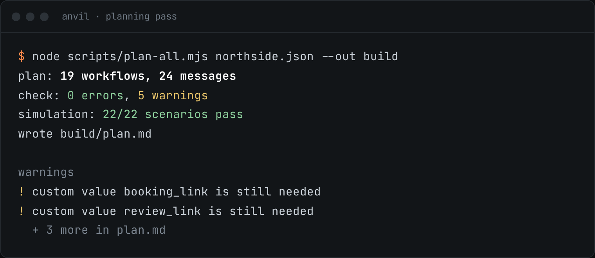
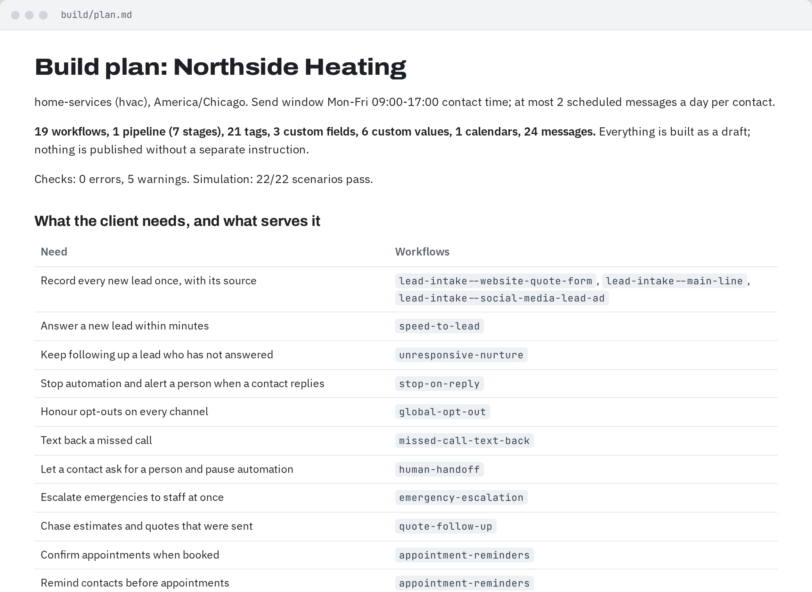
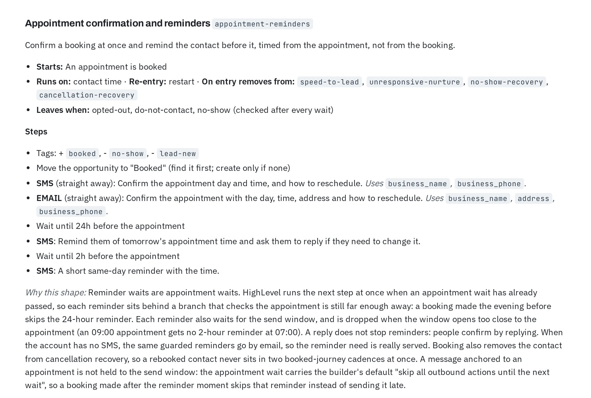

Describe the account. Anvil builds it, then checks every piece.
A HighLevel build toolkit for Claude Code. It plans a client account from call notes and documents, builds it in your own signed-in browser, and reads every write back before it reports done.
9skills297workflow steps catalogued556automated testsBy Shinzuu



Every need in the brief maps to the workflow that serves it, and every workflow says why it has the shape it has. Nothing is built yet at this point.
From call notes to a built account
A full account build passes five stations. The fourth one is you. Nothing is written to the account until you have read the plan and said go.
Intake
Call transcripts, documents, questionnaire answers. Every fact it keeps names where it came from.
requirements profilePlan
Workflows, pipelines, tags, fields and messages, from 30 tested modules or custom designs for what they do not cover.
plan + build specCheck and simulate
Coverage both ways, trigger collisions, send windows, exits and loop caps. Then test contacts run through it minute by minute.
errors, warnings, timelinesYour go
The plan and the list of writes are on screen. Anvil waits for an explicit yes.
go / no-goBuild and read back
Built in dependency order as drafts. Each write is read back and graded, and the job ends with an undo list.
manifest + undo list
It runs the plan before it builds it
Before anything touches the account, Anvil pushes made-up contacts through the plan and checks every send against the rules. This is one of the 22 contacts from the sample brief.
A quote request arrives on Saturday at 21:30. The thank-you text goes out at once, and the office gets a task to call.
The follow-up email waits for Monday 09:00, the start of the send window in the contact's time zone. Four short check-ins follow, then the lead is handed to a person to decide.
If the contact had replied, opted out or asked for a person at any point, the simulation would show them leaving the sequence at the next wait.
Sat 19 Sep
Mon 21 Sep
24 Sep – 5 Oct
Mon 5 Oct
What it builds, and how it gets there
Some parts of HighLevel have a public API. Many do not. Anvil uses the API where it exists and your own logged-in browser tab where it does not.
Whole workflows
Triggers, waits, branches and messages written in one save, then read back and compared with the plan. The builder screen is the fallback, not the default.
297 steps cataloguedForms, surveys, quizzes, funnels
Built through the same session you use by hand, including funnel pages, the chat widget and knowledge-base pages.
in your browserFields, tags, pipelines, calendars
Plus products, email templates, knowledge-base answers and voice or chat AI agents. Each has a card listing every field, so a write is right the first time.
17 API surfaces with proven pathsA whole sub-account
From a spec or a raw brief, in dependency order. Running it again updates or skips what already exists, so a stopped build never leaves duplicates.
re-runnableAnswers about the past
Who entered a workflow, which steps ran and when, who changed it, and what changed between two versions. Read-only.
account-wide countsCounted from the toolkit, not estimated
- 9
- skills: a front door that routes each request, and eight that do the work
- 297
- workflow triggers, actions and filters described, with settings and known traps
- 30+4
- workflow modules, plus industry packs for home services, clinics, real estate and auto
- 556
- automated tests in the toolkit
- 1:56
- to build and verify a form in a sandbox test run, down from 7:30 after one round of tuning
Test count from a run of the suite. Build time from Anvil's own eval log, on a sandbox account.
Where it stops
Anvil works on live CRM accounts. These stops stay in place even when Claude Code's own permission prompts are turned off.
No write without your go
The plan and the writes it implies are shown first. A no-go ends the job with nothing changed.
Every write is read back
Each result is graded match, differs, missing or gone, and reported as it is.
An undo list with every build
What was created or changed, and how to take it back.
Your login, never a password
You sign in to HighLevel yourself. Anvil never sees or stores a password, and each client can keep its own browser profile so logins never mix.
Send windows and stop rules
Contact-facing workflows are checked for the contact's time zone, a weekday send window, opt-outs, replies and loop caps.
Drafts first
Workflows are built as drafts. Publishing is a separate instruction.
What setup looks like
Anvil installs as a Claude Code plugin from a folder, and a coding agent can do most of the setup for you.
- Claude CodeThe plugin loads into it. The skills start when you ask for HighLevel work.
- Chrome with the Claude in Chrome extensionSo Anvil can work in the tab you are already signed in to. A Playwright browser works as a fallback.
- Your own HighLevel loginYou log in to the sub-account yourself. Agencies can give each client its own browser profile.
- The Anvil folderIt carries its own setup notes and a self-check that prints a fix for every problem it finds.
Source available on request.
Set up with your AI agent
Paste one prompt into Claude Code. It finds the folder, adds the plugin, connects the browser, runs the self-check and stops at anything only you can do.
› find the Anvil folder you were given › add it to Claude Code as a plugin › connect Chrome, check you are signed in › run Anvil's self-check, fix what it flags › one read-only test on your account
Questions
Does it publish anything on its own?
No. Workflows are built as drafts, every write waits for your go, and publishing is a separate instruction.
What if a build stops halfway?
Run it again. Anvil checks what already exists and updates or skips it, so the account does not end up with two copies of a field or tag.
Can it work on an account someone else built?
Yes. It can audit an existing account against a set of requirements, and answer read-only questions about who entered a workflow, which steps ran and what changed between versions.
Does it handle several client accounts?
Yes. Each client can have its own browser profile with its own login, so sessions never mix.
Where does the 556 come from?
From running the toolkit's test suite. The other figures on this page are counted from the toolkit itself or taken from its own eval log.